6. Project Trajectory, Results, and Interpretation
6.1 Predicting the contemporaneous outdoor temperature from indoor
measurements
In this section, we train several different types of models to predict the
outdoor
dry-bulb temperature from contemporaneous indoor measurements taken over the whole month of November. Two
different sensors were used for the indoor measurements. 'Sensor A' was left to record in one of our
dorm
rooms, while 'Sensor B' was left to record in an infrequently-used attic next to a window. We will
attempt
to build models to predict the outdoor dry-bulb temperature from each of these sensors separately.
The relevant variables for the models and analyses in this section are:
Model features:
`time`: the date and time of the sample. For each variable
corresponding
to sensor measurements we average hourly. We feature engineer the `time` data by creating Fourier
components
`time_sin` and `time_cos`,
which themselves are used as predictors for modelling.
`motion_mean`: the average value of the motion
measurements
obtained over that hour.
`light_mean`: the average value of the light
measurements
obtained over that hour (NOTE: high values of `light_mean` correspond to LOW light levels).
`pressure_mean`: the average value of the pressure
measurements
obtained over that hour.
`temperature_mean`: the average value of the
sensors'
temperature measurements obtained over that hour.
`humidity_mean`: the average value of humidity
measurements
obtained over that hour.
Model response:
`HourlyDryBulbTemperature`: the outdoor dry-bulb
temperature
measured at the Boston Logan National Weather Service station (KBOS), measured hourly. Throughout this
section we
will refer to this variable as the 'outdoor temperature'.
6.1.1: Linear Regression Models
We begin by training simple linear regression models to the data obtained from
each
sensor and calculating the $R^2$ values for the training and test sets. We standardize the data so that the
magnitudes of the coefficients can be compared to one another as a metric of feature importance.
Performance of linear regression models:
Sensor A:
R^2 on training set: 0.49
R^2 on test set: 0.57
Sensor B:
R^2 on training set: 0.70
R^2 on test set: 0.68
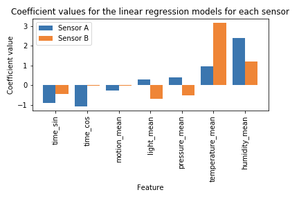
We see that our simple linear regression models for sensor A performs better on
the
test set than the training set, while the opposite is true for sensor B. It appears that the model based on
measurements by sensor B performs better than the model based on measurements by sensor A. This is expected,
because sensor B was kept in a more isolated environment than sensor A.
We then compare the coefficient values for the features in these linear
regression
models. Based on this analysis, `humidity_mean` is the most important feature for the sensor A model while
`temperature_mean` is the most important feature for the sensor B model. Since sensor B was kept next to a
window,
we would indeed expect the temperature measurements of sensor B to more accurately reflect the outdoor
temperature
and as a result the coefficient for `temperature_mean` should be very high. Since sensor A is kept within a
dorm
room far from a window, its temperature measurements will not reflect the outdoor temperature nearly as well
and
its model must depend more on other variables that correlate with the outdoor temperature. The most
important
coefficient for sensor A is apparently `humidity_mean`, which positively correlates with the outdoor
temperature.
This is consistent with the coefficient values for sensor B, which also detects a positive correlation
between
`humidity_mean` and the outdoor temperature.
We also detect a sizeable negative coefficient value for `motion_mean` in the
sensor A
linear regression model, while the magnitude of the `motion_mean` coefficient is negligible for sensor B.
This is
consistent with the occupants of the dorm room spending more time inside when it is cold. Since sensor B is
in an
attic which is infrequently visited by people, it rarely detects significant motion and thus would not
register
any relationship between outdoor temperature and motion.
It should be noted that high values of `light_mean` correspond to darkness,
whereas low
values correspond to bright conditions. For sensor B we see a significant negative value of the coefficient
for
`light_mean`, which indicates that darkness is positively associated with low outdoor temperatures. This is
of
course reasonable, as it gets colder at night. Sensor A, on the other hand, has a positive value of this
coefficient, indicating that its `light_mean` data is negatively associated with the outdoor temperature.
This is
also reasonable: during the day (when the outdoor temperature is high) no one is in the room and the lights
are
off since everyone is at work or in class, whereas at night the indoor lights are on and the occupant is at
home--presumably staying up all night working on AC209a problem sets.
Sensor A also has a sizeable negative `time_cos` coefficient, whereas the
`time_cos`
and `time_sin` coefficients for sensor B are both relatively large and negative. This is intuitive; when
these
respective variables are positive it is either late at night or early in the morning, when it is expected to
be
coldest.
6.1.2 Polynomial regression (order 2) with pairwise interaction terms and LASSO
regularization
Next, we train 2nd-order polynomial models with all pairwise interaction terms to
the
measaurement data of each sensor in order to study the effects of interactions between our features. We also
employ LASSO regularization for feature selection, cross-validating on the regularization penalty. We also
standardize all variables prior to calculating the quadratic and interaction terms.
Performance of linear regression models:
Sensor A:
R^2 on training set: 0.61
R^2 on test set: 0.61
Sensor B:
R^2 on training set: 0.78
R^2 on test set: 0.79
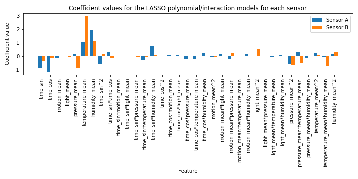
We see that the regularized polynomial models with interactions do indeed perform
a bit
better than the simple linear regression models for each of the sensors.
We plot the coefficient values for each feature in these models. We see that
LASSO
regularization has set many of the coefficients to zero, particularly for sensor B. This makes sense,
because
sensor B's `temperature_mean` is such a strong predictor for outdoor temperature given its location near
a
window that the space of other predictors can be made very sparse without sacrificing much accuracy. For the
linear terms we see the same breakdown in most important feature for the two sensors as we did for the
simple
linear regression models--sensor A's most important feature is still `humidity_mean`, while sensor
B's
most important feature is still `temperature_mean`. Interestingly, for sensor B `pressure_mean` is now very
negatively associated with outdoor temperature, whereas the model for sensor A features a small positive
correlation. We also still see the negative association between outdoor temperature and `motion_mean` for
sensor
A. Additionally, both Fourier components for time have negative values for both sensors, corresponding to
early
morning generally being the coldest time of day.
For both sensors we see a sizeable negative association between `pressure_mean^2`
and
the outdoor temperature. This, combined with the fact that Sensor B has a strongly negative coefficient for
`pressure_mean`, indicates that the outside temperature decreases more strongly with increasing
`pressure_mean`
than it increases with decreasing `pressure_mean`.
We also detect a sizeable negative association between the interaction term
`temperature_mean*humidity_mean` and the outdoor temperature for sensor B. Since both `temperature_mean` and
`humidity_mean` are the two most important linear features, it is not unexpected that their interaction term
would
also be quite significant. The fact that these coefficients are negative but the corresponding linear-term
coefficients are very positive indicates that when both `temperature_mean` and `humidity_mean` are high, the
outdoor temperature does not increase as quickly with these variables as it would if only one of these
variables
were high.
For the interaction term `temperature_mean*pressure_mean`, we see that sensor
A's
coefficient is positive whereas sensor B's coefficient is negative. This is the only interaction term
which is
both significant for both sensors but opposite in sign. It should be noted that sensor B's negative
value of
the coefficient of `pressure_mean` is counterintuitive because barometric pressure and temperature are
usually
positively associated--hotter air generally has a higher barometric pressure, barring other weather
phenomena.
6.1.3 Bagging models
We now try to improve our prediction accuracy by bagging with regression trees.
We
begin by cross-validating on the depth of trees in the ensemble. The CV score as a function of tree depth
for both
sensor A and sensor B bagging models saturates by a tree depth of 15, so we will use this value for the
depth of
the trees in an ensemble of 100.
Performance of linear regression models:
Sensor A:
R^2 on training set: 0.97
R^2 on test set: 0.84
Sensor B:
R^2 on training set: 0.98
R^2 on test set: 0.85
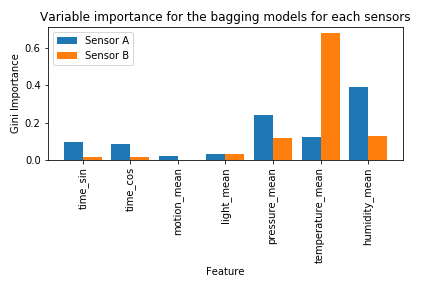
For the bagging model with a tree depth of 15 we obtain much higher test-set
$R^2$
values for both sensors.
From the variable importance plot above we see that the most important variable
for
Sensor A is `humidity_mean` while the most important variable for Sensor B is `temperature_mean`. This
breakdown
agrees well with the variable importance analysis of the previous regression models. We also see that Sensor
A has
a strong reliance on `pressure_mean` and the Fourier components `time_sin` and `time_cos` for accurately
determining the outdoor temperature. As we stated previously, the temperature measurements of sensor A will
reflect the outdoor temperature much less well than those for sensor B since it is not near a window. Thus,
the
model for sensor A must rely relatively more on variables that correlate with the outdoor temperature. In
general,
humidity, barometric pressure, and time of day do just that.
Given that the bagging models performed the best of all three models we have
considered
for predicting the contemporaneous outdoor temperature, we will now use them to predict on both the training
and
test sets:
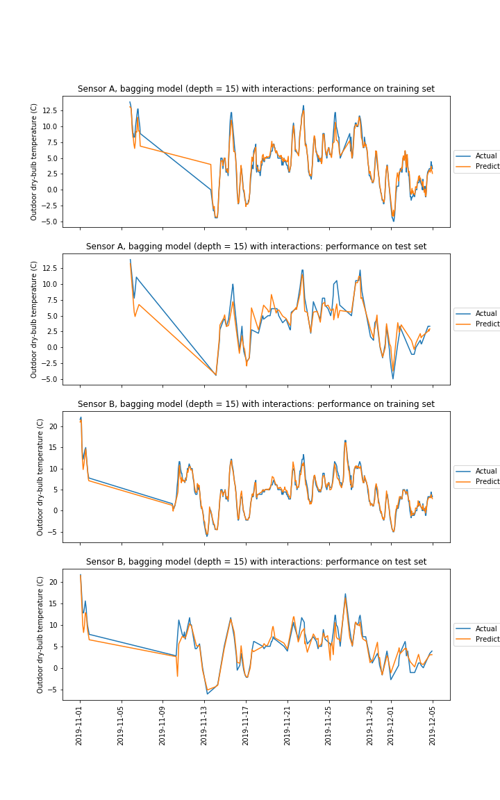
6.2 RNN modeling for weather forecast
A recurrent neural network (RNN) is a type of neural network where the output
from the
previous step are fed as input to the current step in order to predict am sequence of data. Unlike
feedforward
neural networks, RNNs can use their internal state (memory) to process sequences of inputs. It can be used
in
weather forecasting, stock market prediction, handwritten recognition, speech recognition, music
composition,
etc.where the data are ordered in sequence. Long short-term memory (LSTM) networks are a special kind of
RNN,
which are capable of learning long-term dependencies.
In the notebook, we use LSTM to demonstrate preliminary weather forecasting,
trained on
three different datasets: (1) Boston Logan Airport Weather Station Data, (2) Data collected by CS109A sensor
A,
(3) Data collected by CS109A sensor B. Below is an example of predicting temperature 12 hours into the
future
based on 72 hours history (each time step corresponds to one hour). More prediction plots are in the
notebook.
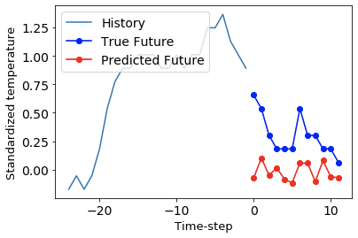
The advantage of RNN is it can learn special patterns in a sequence and predict a
series of points one by one. The corresponding downside is that RNN error increases as the number of
prediction
points increases. This is because if the first point is not predicted correctly, the error will be taken to
the
second point prediction, and the second point error will be taken to later point prediction, such that the
error
gets amplified. To study this, we train RNN models separately to predict different hours into the future,
and
record the prediction errors. The result is plotted here:
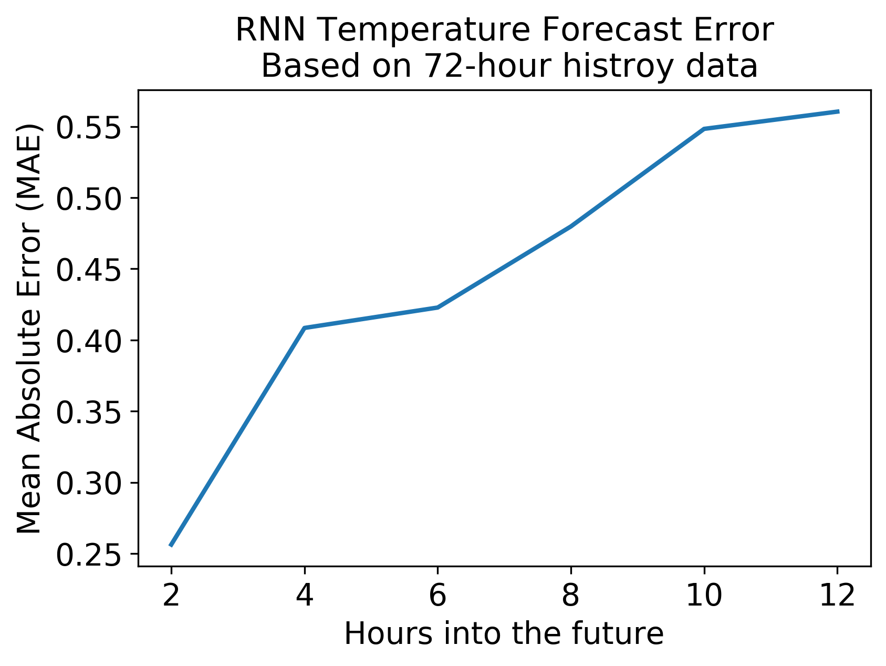
As can be seen, the error increases monotonically as we increase the number of
hours to
predict. This is in contrast with the SARIMA model, as it can handle long-time prediction.
6.3 SARIMA modeling
SARIMA is a more general version of the ARIMA model (Autoregressive Integrated
Moving Average). ARIMA in turn stands for Auto-Regressive Integrated Moving average. It works
basically by
differencing the time series until it becomes stationary. Then predicts over that series by a combination of
auto-regressive methods and moving average. Stationary here means that the series joint probability
distribution does not change with time. I.e. a stationary series variations about the mean are constant and
have
no trend.
SARIMA It is more general in the sense that it can accommodate seasonal
(periodic)
variations. Whereas ARIMA expects non-seasonal input or input with the seasonal component removed.
SARIMAX
has a total of 7 free parameters. It inherits the p,d,q parameters from ARIMA (trend autoregression
order,
trend difference order, and the trend moving average order) and adds four more : sp, sd, sq & f, which
are
respectively the seasonal autoregressive order, seasonal difference order, the seasonal moving average order
and
the number of timesteps for a given seasonal period.
In our modeling, we’ve fixed the frequency to be 24. This is natural since
our data
is sampled every hour and many of our predictors (light, temperature, humidity etc.) will likely also
fluctuate on
a daily timescale. We treated the number of terms as hyperparameters and simply compared many different
values in
a grid search to find the best model. To judge the quality of each model we aim to minimize the AIC score
defined
to be: AIC = . Where k is the number of estimated
parameters in
the model and L is the maximum likelihood. As such we can account both for the risk of overfitting,
(the
presence of k is a penalizes of overfit models) and the risk of underfitting (by minimizing AIC).
While the AIC is useful for discriminating between other models with AIC
values to
properly compare with the RNN forecasting we also compute the maximum error as a function of time.
One of the advantages of this SARIMA for time series prediction is its
presumption
of periodicity. This ensures our predictions remain relatively reasonable even over long timescales. The
disadvantage is lower order fits have difficulty capturing nuances in the behavior, whereas higher order
fits take
quite a while to run. Ideally one would like to conduct a grid search on the entire space with many
different
orders, but that is computationally costly.
Thus, our modeling we vary the trend parameters among 0th,1st, and 2nd order
and do
the same with the seasonal orders, but we keep the order of each parameter seasonal parameter and trend
parameter
the same within each run. (i.e we compare the cartesian product of ({[0,0,0],[1,1,1],[2,2,2]} with
{[0,0,0],[1,1,1],[2,2,2]}). In principle varying each parameter individually would be more rigorous, but
since
SARIMA models take quite a while to run, imposing the individual parameters must be the same cuts down on
the
parameter space while allowing us to still sample from a few higher order models.
For forecasting the temperature we get, for sensors A, B, and the Boston Logan
station are respectively:
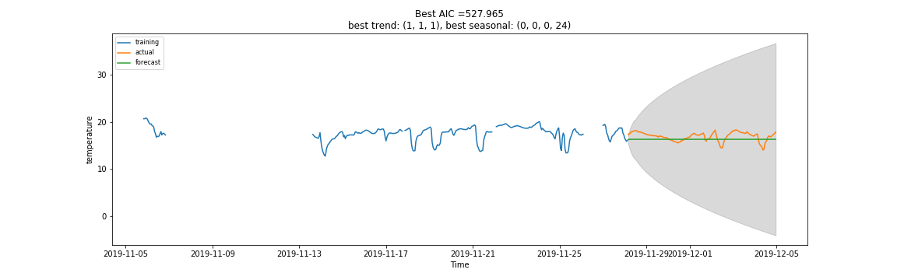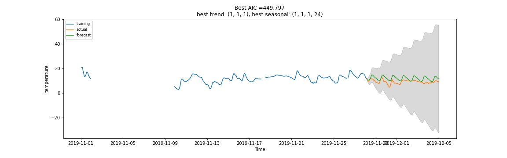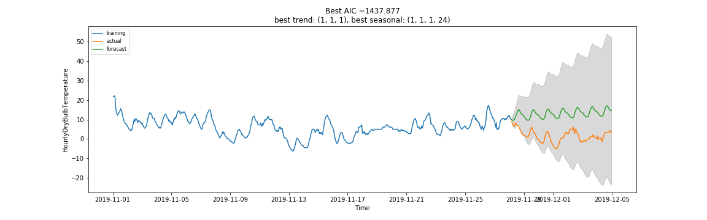
Here the shaded areas are 95% confidence bounds. We see that we recover
periodic
variations in the Sensor B model, but the temperature recorded by Sensor A is best fit by a constant.
This
makes sense since Sensor A was kept in a dorm room and sensor B was kept in an attic, largely without human
presence. While the model does very well for the two sensors, it fails to capture the recent downward
trend
in temperature shown by the weather station. This makes sense since we’ve limited the order of the
terms
rather stringently, higher order terms might help improve the fit. For more direct comparison with the
RNN
modeling we also show the absolute error versus time, again for sensors A, B and Boston Logan respectively:
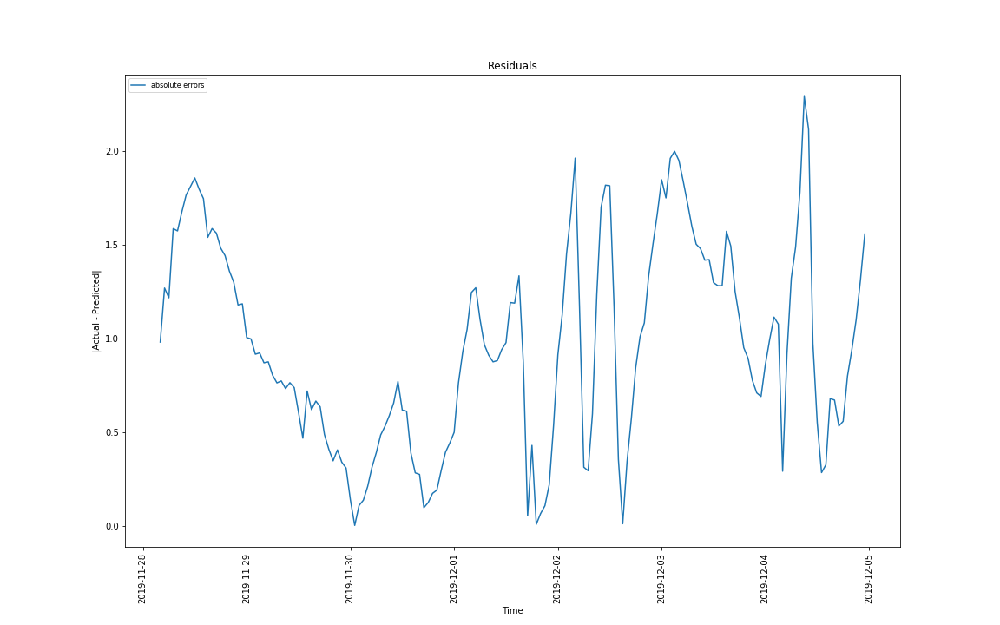
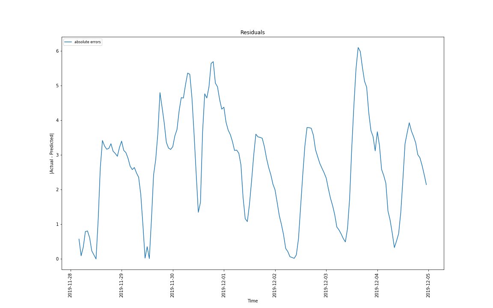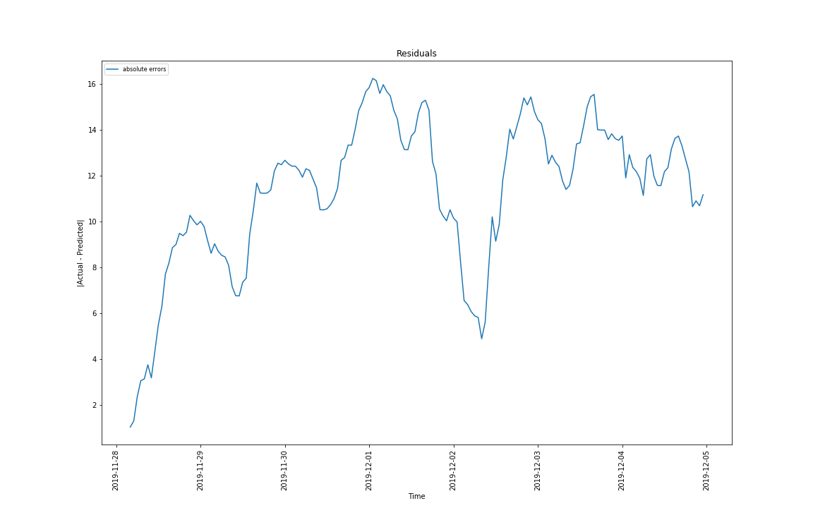
As expected, since SARIMA works of a fundamentally periodic model, the
residuals
don’t grow very strongly with time. This also makes it ideal for modeling variations in the light from
the
two sensors. As usual for Sensor A and B:
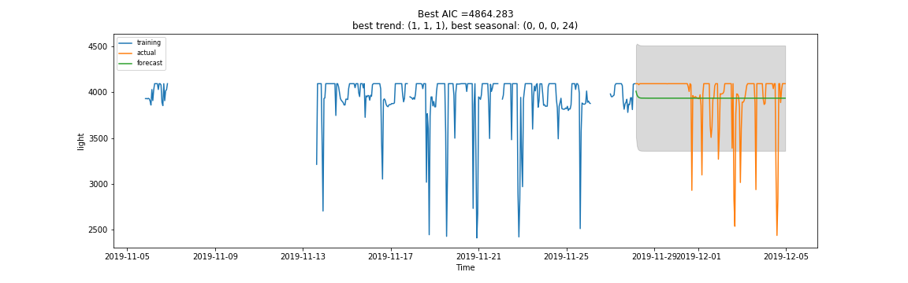
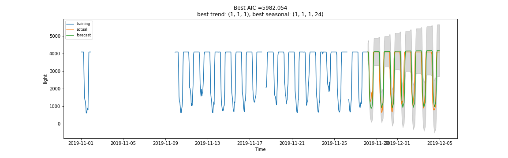
The room sensor A was left in was largely darkened for the period, so SARIMA
simply
predicts a constant. Whereas the room containing sensor B had a window, and so the sensor picked up the
sunrise
and sunset times. SARIMA forecasts this very nicely.
The forecasts for Humidity and Pressure were near constant for both Sensors A
and B,
which seems reasonable given the data.
Sensor A and B Humidity:
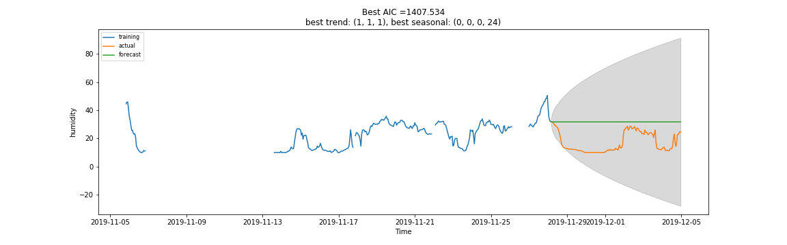
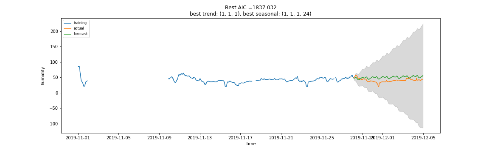
Sensor A and B Pressure:
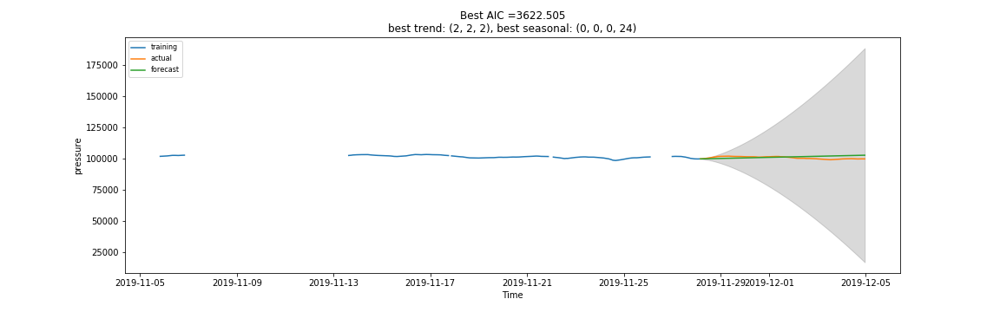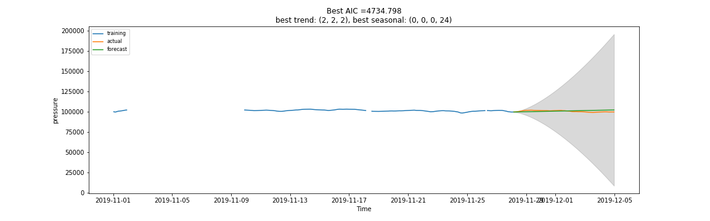
As mentioned above, the SARIMA models have significant room for improvement
given
more rigorous searches and longer computational times.
We believe the SARIMA models in particular have significant room for improvement
given
more rigorous searches and longer computation times. In addition to the previously described grid search we
also
conducted a deeper search rigorously checking all combinations of parameters for select parameters.
Each
such run takes about 12hrs per feature so it was impractical to do this for the entire dataset. The
following is an example of such a result predicted for the Sensor A temperature data. It was obtained using
the
orders (2,1,2) for the trend component and (2,1,2) for the seasonal (since the orders are different
it’s an
example of a model that wouldn’t be found by our less rigours search). We can see in this fit SARIMA
attempts to fit the periodicity in the downward temperature spikes. (Caused by going to bed with the windows
open). It manages to understand the periodicity in the spikes, but fails to predict when the occur location,
therefore it predicts temperature fluctuations where none exist in some cases.
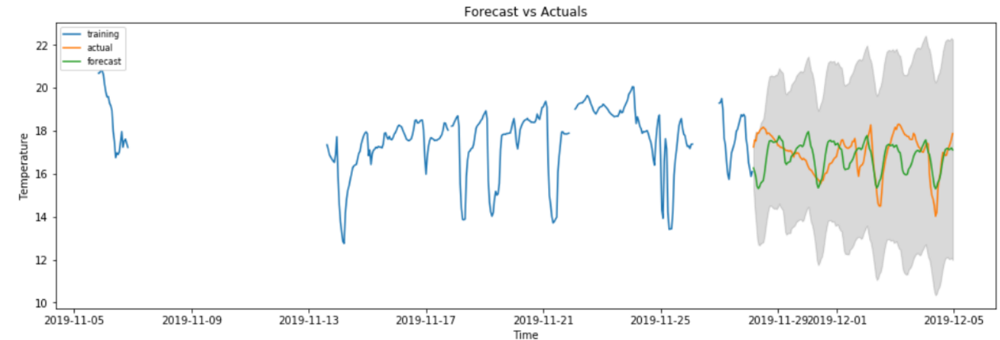
This is a good example of how our results could potentially be further improved
given
more time and computational resources.
 for temperature: 0.76
for temperature: 0.76